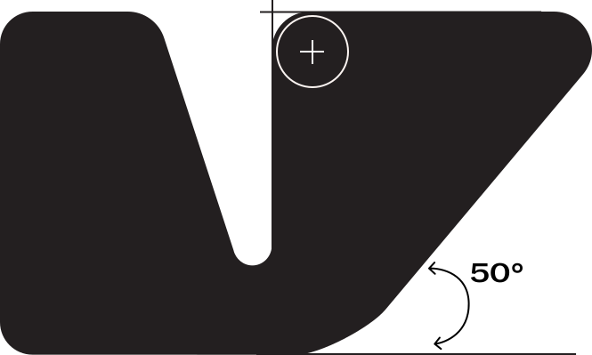
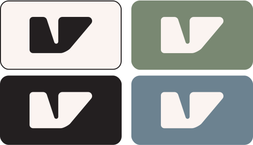
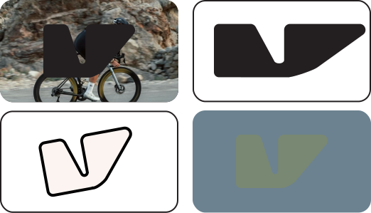
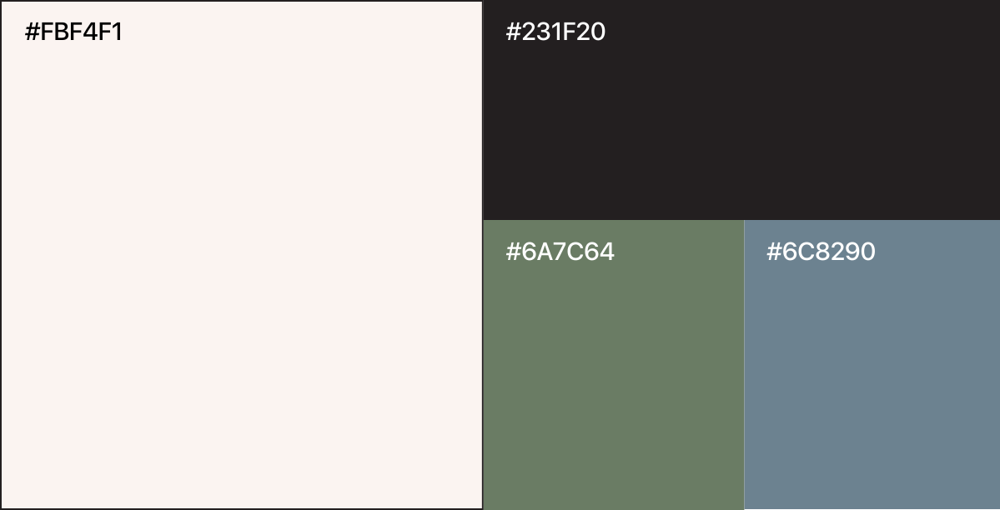
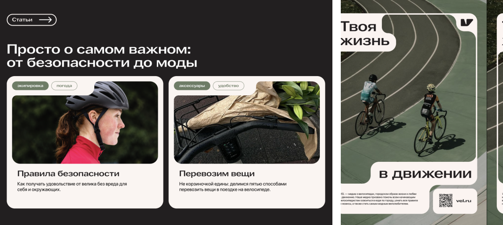

Платформа бренда
Семантика
Понимающий, надёжный, понятный, проверенный.
Суть
Поддержка новичков в велосипедном мире простым и понятным языком.
Ценности
- Психическое равновесие.
- Баланс работы-дома-хобби.
- Новые впечатления (развлечения).
- Наслаждение жизнью.
Миссия
Поддерживать людей в стремлении кататься на велосипеде.
Продвигать развитие велотранспорта, велодорожек и в целом комфортной пешеходной среды.
Продвигать развитие велотранспорта, велодорожек и в целом комфортной пешеходной среды.
Ton of voice
Дружелюбный, юморной, поддерживающий.
Логотип

1.
Логотипом является первая буква названия бренда (v), чьи элементы являются метафорой скорости (наклонённая правая часть) и составляющих корпуса велосипеда (в частности, рама).
2.
Основа логотипа — графическое изображение сопряжения нескольких окружностей. Это придаёт изгибам плавные очертания, делая акцент на эргономичности формы велосипеда.
Расположение логотипа
Ок
- Логотип должен располагаться на контрастном фоне с использованием фирменных цветов
- Допускается помещать логотип в контейнер или не ограничивать его рамками в пространстве
- Единый вариант логотипа используется для больших и маленьких носителей, в вебе и типографике
Не ок
- Логотип должен располагаться на контрастном фоне с использованием фирменных цветов
- Допускается помещать логотип в контейнер или не ограничивать его рамками в пространстве
- Единый вариант логотипа используется для больших и маленьких носителей, в вебе и типографике
Фирменные цвета
Шрифт
Используемые шрифты
- Murs Gothic — заголовки и акцентные элементы
- SF Pro Display — сплошной текст
Примеры
Сетка
- Desktop — 9 Columns / Margin 40 / Gutter 20
- Mobile — 3 Columns / Margin 20 / Gutter 10
Фотографии
1.
Снимки должны быть высокого качества; сделанные при дневном освещении; Композиционно вписываться в граф. элементы, если такие используются.
2.
Цветовая палитра фотографий должна перекликаться с фирменными цветами бренда. Приветствуются бежевые, небесно-голубые,
приглушённо зелёные цвета.
3.
Приветствуется присутствие человека в движении на велосипеде, в непринужденной повседневной обстановке и позе, в городской среде, необычные ракурсы, не-постановочный характер фотографий.
4.
Настроение спокойное, воодушевленное, уверенное, радостное